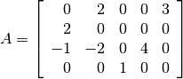
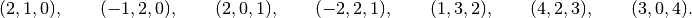
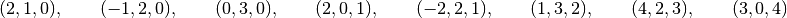
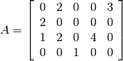

This chapter describes the two CVXOPT matrix types: matrix objects, used for dense matrix computations, and spmatrix objects, used for sparse matrix computations.
A dense matrix is created by calling the function matrix. The arguments specify the values of the coefficients, the dimensions, and the type (integer, double, or complex) of the matrix.
size is a tuple of length two with the matrix dimensions. The number of rows and/or the number of columns can be zero.
tc stands for type code. The possible values are 'i', 'd', and 'z', for integer, real (double), and complex matrices, respectively.
x can be a number, a sequence of numbers, a dense or sparse matrix, a one- or two-dimensional NumPy array, or a list of lists of matrices and numbers.
If x is a number (Python integer, float, or complex number), a matrix is created with the dimensions specified by size and with all the coefficients equal to x. The default value of size is (1,1), and the default value of tc is the type of x. If necessary, the type of x is converted (from integer to double when used to create a matrix of type 'd', and from integer or double to complex when used to create a matrix of type 'z').
>>> from cvxopt import matrix
>>> A = matrix(1, (1,4))
>>> print(A)
[ 1 1 1 1]
>>> A = matrix(1.0, (1,4))
>>> print(A)
[ 1.00e+00 1.00e+00 1.00e+00 1.00e+00]
>>> A = matrix(1+1j)
>>> print(A)
[ 1.00e+00+j1.00e+00]
If x is a sequence of numbers (list, tuple, array, array array, ...), then the numbers are interpreted as the coefficients of a matrix in column-major order. The length of x must be equal to the product of size[0] and size[1]. If size is not specified, a matrix with one column is created. If tc is not specified, it is determined from the elements of x (and if that is impossible, for example because x is an empty list, a value 'i' is used). Type conversion takes place as for scalar x.
The following example shows several ways to define the same integer matrix.
>>> A = matrix([0, 1, 2, 3], (2,2))
>>> A = matrix((0, 1, 2, 3), (2,2))
>>> A = matrix(range(4), (2,2))
>>> from array import array
>>> A = matrix(array('i', [0,1,2,3]), (2,2))
>>> print(A)
[ 0 2]
[ 1 3]
In Python 2.7 the following also works.
>>> A = matrix(xrange(4), (2,2))
If x is a dense or sparse matrix, then the coefficients of x are copied, in column-major order, to a new matrix of the given size. The total number of elements in the new matrix (the product of size[0] and size[1]) must be the same as the product of the dimensions of x. If size is not specified, the dimensions of x are used. The default value of tc is the type of x. Type conversion takes place when the type of x differs from tc, in a similar way as for scalar x.
>>> A = matrix([1., 2., 3., 4., 5., 6.], (2,3))
>>> print(A)
[ 1.00e+00 3.00e+00 5.00e+00]
[ 2.00e+00 4.00e+00 6.00e+00]
>>> B = matrix(A, (3,2))
>>> print(B)
[ 1.00e+00 4.00e+00]
[ 2.00e+00 5.00e+00]
[ 3.00e+00 6.00e+00]
>>> C = matrix(B, tc='z')
>>> print(C)
[ 1.00e+00-j0.00e+00 4.00e+00-j0.00e+00]
[ 2.00e+00-j0.00e+00 5.00e+00-j0.00e+00]
[ 3.00e+00-j0.00e+00 6.00e+00-j0.00e+00]
In Python 2.7 NumPy arrays can be converted to matrices.
>>> from numpy import array
>>> x = array([[1., 2., 3.], [4., 5., 6.]])
>>> x
array([[ 1. 2. 3.]
[ 4. 5. 6.]])
>>> print(matrix(x))
[ 1.00e+00 2.00e+00 3.00e+00]
[ 4.00e+00 5.00e+00 6.00e+00]
If x is a list of lists of dense or sparse matrices and numbers (Python integer, float, or complex), then each element of x is interpreted as a block-column stored in column-major order. If size is not specified, the block-columns are juxtaposed to obtain a matrix with len(x) block-columns. If size is specified, then the matrix with len(x) block-columns is resized by copying its elements in column-major order into a matrix of the dimensions given by size. If tc is not specified, it is determined from the elements of x (and if that is impossible, for example because x is a list of empty lists, a value 'i' is used). The same rules for type conversion apply as for scalar x.
>>> print(matrix([[1., 2.], [3., 4.], [5., 6.]]))
[ 1.00e+00 3.00e+00 5.00e+00]
[ 2.00e+00 4.00e+00 6.00e+00]
>>> A1 = matrix([1, 2], (2,1))
>>> B1 = matrix([6, 7, 8, 9, 10, 11], (2,3))
>>> B2 = matrix([12, 13, 14, 15, 16, 17], (2,3))
>>> B3 = matrix([18, 19, 20], (1,3))
>>> C = matrix([[A1, 3.0, 4.0, 5.0], [B1, B2, B3]])
>>> print(C)
[ 1.00e+00 6.00e+00 8.00e+00 1.00e+01]
[ 2.00e+00 7.00e+00 9.00e+00 1.10e+01]
[ 3.00e+00 1.20e+01 1.40e+01 1.60e+01]
[ 4.00e+00 1.30e+01 1.50e+01 1.70e+01]
[ 5.00e+00 1.80e+01 1.90e+01 2.00e+01]
A matrix with a single block-column can be represented by a single list (i.e., if x is a list of lists, and has length one, then the argument x can be replaced by x[0]).
>>> D = matrix([B1, B2, B3])
>>> print(D)
[ 6 8 10]
[ 7 9 11]
[ 12 14 16]
[ 13 15 17]
[ 18 19 20]
A general spmatrix object can be thought of as a triplet description of a sparse matrix, i.e., a list of entries of the matrix, with for each entry the value, row index, and column index. Entries that are not included in the list are assumed to be zero. For example, the sparse matrix

has the triplet description

The list may include entries with a zero value, so triplet descriptions are not necessarily unique. The list

is another triplet description of the same matrix.
An spmatrix object corresponds to a particular triplet description of a sparse matrix. We will refer to the entries in the triplet description as the nonzero entries of the object, even though they may have a numerical value zero.
Three functions are provided to create sparse matrices. The first, spmatrix, constructs a sparse matrix from a triplet description.
I and J are sequences of integers (lists, tuples, array arrays, ...) or integer matrices (matrix objects with typecode 'i'), containing the row and column indices of the nonzero entries. The lengths of I and J must be equal. If they are matrices, they are treated as lists of indices stored in column-major order, i.e., as lists list(I), respectively, list(J).
size is a tuple of nonnegative integers with the row and column dimensions of the matrix. The size argument is only needed when creating a matrix with a zero last row or last column. If size is not specified, it is determined from I and J: the default value for size[0] is max(I)+1 if I is nonempty and zero otherwise. The default value for size[1] is max(J)+1 if J is nonempty and zero otherwise.
tc is the typecode, 'd' or 'z', for double and complex matrices, respectively. Integer sparse matrices are not implemented.
x can be a number, a sequence of numbers, or a dense matrix. This argument specifies the numerical values of the nonzero entries.
If x is a number (Python integer, float, or complex), a matrix is created with the sparsity pattern defined by I and J, and nonzero entries initialized to the value of x. The default value of tc is 'd' if x is integer or float, and 'z' if x is complex.
The following code creates a 4 by 4 sparse identity matrix.
>>> from cvxopt import spmatrix
>>> A = spmatrix(1.0, range(4), range(4))
>>> print(A)
[ 1.00e+00 0 0 0 ]
[ 0 1.00e+00 0 0 ]
[ 0 0 1.00e+00 0 ]
[ 0 0 0 1.00e+00]
If x is a sequence of numbers, a sparse matrix is created with the entries of x copied to the entries indexed by I and J. The list x must have the same length as I and J. The default value of tc is determined from the elements of x: 'd' if x contains integers and floating-point numbers or if x is an empty list, and 'z' if x contains at least one complex number.
>>> A = spmatrix([2,-1,2,-2,1,4,3], [1,2,0,2,3,2,0], [0,0,1,1,2,3,4])
>>> print(A)
[ 0 2.00e+00 0 0 3.00e+00]
[ 2.00e+00 0 0 0 0 ]
[-1.00e+00 -2.00e+00 0 4.00e+00 0 ]
[ 0 0 1.00e+00 0 0 ]
If x is a dense matrix, a sparse matrix is created with all the entries of x copied, in column-major order, to the entries indexed by I and J. The matrix x must have the same length as I and J. The default value of tc is 'd' if x is an 'i' or 'd' matrix, and 'z' otherwise. If I and J contain repeated entries, the corresponding values of the coefficients are added.
The function sparse constructs a sparse matrix from a block-matrix description.
tc is the typecode, 'd' or 'z', for double and complex matrices, respectively.
x can be a matrix, spmatrix, or a list of lists of matrices (matrix or spmatrix objects) and numbers (Python integer, float, or complex).
>>> from cvxopt import matrix, spmatrix, sparse
>>> A = matrix([[1., 2., 0.], [2., 1., 2.], [0., 2., 1.]])
>>> print(A)
[ 1.00e+00 2.00e+00 0.00e+00]
[ 2.00e+00 1.00e+00 2.00e+00]
[ 0.00e+00 2.00e+00 1.00e+00]
>>> B = spmatrix([], [], [], (3,3))
>>> print(B)
[0 0 0]
[0 0 0]
[0 0 0]
>>> C = spmatrix([3, 4, 5], [0, 1, 2], [0, 1, 2])
>>> print(C)
[ 3.00e+00 0 0 ]
[ 0 4.00e+00 0 ]
[ 0 0 5.00e+00]
>>> D = sparse([[A, B], [B, C]])
>>> print(D)
[ 1.00e+00 2.00e+00 0 0 0 0 ]
[ 2.00e+00 1.00e+00 2.00e+00 0 0 0 ]
[ 0 2.00e+00 1.00e+00 0 0 0 ]
[ 0 0 0 3.00e+00 0 0 ]
[ 0 0 0 0 4.00e+00 0 ]
[ 0 0 0 0 0 5.00e+00]
A matrix with a single block-column can be represented by a single list.
>>> D = sparse([A, C])
>>> print(D)
[ 1.00e+00 2.00e+00 0 ]
[ 2.00e+00 1.00e+00 2.00e+00]
[ 0 2.00e+00 1.00e+00]
[ 3.00e+00 0 0 ]
[ 0 4.00e+00 0 ]
[ 0 0 5.00e+00]
The function spdiag constructs a block-diagonal sparse matrix from a list of matrices.
x is a dense or sparse matrix with a single row or column, or a list of square dense or sparse matrices or scalars. If x is a matrix, a sparse diagonal matrix is returned with the entries of x on its diagonal. If x is list, a sparse block-diagonal matrix is returned with the elements in the list as its diagonal blocks.
>>> from cvxopt import matrix, spmatrix, spdiag
>>> A = 3.0
>>> B = matrix([[1,-2],[-2,1]])
>>> C = spmatrix([1,1,1,1,1],[0,1,2,0,0,],[0,0,0,1,2])
>>> D = spdiag([A, B, C])
>>> print(D)
[ 3.00e+00 0 0 0 0 0 ]
[ 0 1.00e+00 -2.00e+00 0 0 0 ]
[ 0 -2.00e+00 1.00e+00 0 0 0 ]
[ 0 0 0 1.00e+00 1.00e+00 1.00e+00]
[ 0 0 0 1.00e+00 0 0 ]
[ 0 0 0 1.00e+00 0 0 ]
The following table lists the arithmetic operations defined for dense and sparse matrices. In the table A and B are dense or sparse matrices of compatible dimensions, c is a scalar (a Python number or a dense 1 by 1 matrix), D is a dense matrix, and e is a Python number.
| Unary plus/minus | +A, -A |
| Addition | A + B, A + c, c + A |
| Subtraction | A - B, A - c, c - A |
| Matrix multiplication | A * B |
| Scalar multiplication and division | c * A, A * c, A / c |
| Remainder after division | D % c |
| Elementwise exponentiation | D**e |
The type of the result of these operations generally follows the Python conventions. For example, if A and c are integer, then in Python 2 the division A/c is interpreted as integer division and results in a type 'i' matrix, while in Python 3 it is interpreted as standard divison and results in a type 'd' matrix. An exception to the Python conventions is elementwise exponentiation: if D is an integer matrix and e is an integer number than D**e is a matrix of type 'd'.
Addition, subtraction, and matrix multiplication with two matrix operands result in a sparse matrix if both matrices are sparse, and in a dense matrix otherwise. The result of a scalar multiplication or division is dense if A is dense, and sparse if A is sparse. Postmultiplying a matrix with a number c means the same as premultiplying, i.e., scalar multiplication. Dividing a matrix by c means dividing all its entries by c.
If c in the expressions A+c, c+A, A-c, c-A is a number, then it is interpreted as a dense matrix with the same dimensions as A, type given by the type of c, and all its entries equal to c. If c is a 1 by 1 dense matrix and A is not 1 by 1, then c is interpreted as a dense matrix with the same size of A and all entries equal to c[0].
If c is a 1 by 1 dense matrix, then, if possible, the products c*A and A*c are interpreted as matrix-matrix products. If the product cannot be interpreted as a matrix-matrix product because the dimensions of A are incompatible, then the product is interpreted as the scalar multiplication with c[0]. The division A/c and remainder A%c with c a 1 by 1 matrix are always interpreted as A/c[0], resp., A%c[0].
The following in-place operations are also defined, but only if they do not change the type (sparse or dense, integer, real, or complex) of the matrix A. These in-place operations do not return a new matrix but modify the existing object A.
| In-place addition | A += B, A += c |
| In-place subtraction | A -= B, A -= c |
| In-place scalar multiplication and division | A *= c, A /= c |
| In-place remainder | A %= c |
For example, if A has typecode 'i', then A += B is allowed if B has typecode 'i'. It is not allowed if B has typecode 'd' or 'z' because the addition A+B results in a 'd' or 'z' matrix and therefore cannot be assigned to A without changing its type. As another example, if A is a sparse matrix, then A += 1.0 is not allowed because the operation A = A + 1.0 results in a dense matrix, so it cannot be assigned to A without changing its type.
In-place matrix-matrix products are not allowed. (Except when c is a 1 by 1 dense matrix, in which case A *= c is interpreted as the scalar product A *= c[0].)
In-place remainder is only defined for dense A.
It is important to know when a matrix operation creates a new object. The following rules apply.
A simple assignment (A = B) is given the standard Python interpretation, i.e., it assigns to the variable A a reference (or pointer) to the object referenced by B.
>>> B = matrix([[1.,2.], [3.,4.]])
>>> print(B)
[ 1.00e+00 3.00e+00]
[ 2.00e+00 4.00e+00]
>>> A = B
>>> A[0,0] = -1
>>> print(B) # modifying A[0,0] also modified B[0,0]
[-1.00e+00 3.00e+00]
[ 2.00e+00 4.00e+00]
The regular (i.e., not in-place) arithmetic operations always return new objects.
>>> B = matrix([[1.,2.], [3.,4.]])
>>> A = +B
>>> A[0,0] = -1
>>> print(B) # modifying A[0,0] does not modify B[0,0]
[ 1.00e+00 3.00e+00]
[ 2.00e+00 4.00e+00]
The in-place operations directly modify the coefficients of the existing matrix object and do not create a new object.
>>> B = matrix([[1.,2.], [3.,4.]])
>>> A = B
>>> A *= 2
>>> print(B) # in-place operation also changed B
[ 2.00e+00 6.00e+00]
[ 4.00e+00 8.00e+00]
>>> A = 2*A
>>> print(B) # regular operation creates a new A, so does not change B
[ 2.00e+00 6.00e+00]
[ 4.00e+00 8.00e+00]
Matrices can be indexed using one or two arguments. In single-argument indexing of a matrix A, the index runs from -len(A) to len(A)-1, and is interpreted as an index in the one-dimensional array of coefficients of A in column-major order. Negative indices have the standard Python interpretation: for negative k, A[k] is the same element as A[len(A) + k].
Four different types of one-argument indexing are implemented.
Thus, single-argument indexing returns a scalar (if the index is an integer), or a matrix with one column. This is consistent with the interpretation that single-argument indexing accesses the matrix in column-major order.
Note that an index list or an index matrix are equivalent, but they are both useful, especially when we perform operations on index sets. For example, if I and J are lists then I+J is the concatenated list, and 2*I is I repeated twice. If they are matrices, these operations are interpreted as arithmetic operations. For large index sets, indexing with integer matrices is also faster than indexing with lists.
The following example illustrates one-argument indexing.
>>> from cvxopt import matrix, spmatrix
>>> A = matrix(range(16), (4,4), 'd')
>>> print(A)
[ 0.00e+00 4.00e+00 8.00e+00 1.20e+01]
[ 1.00e+00 5.00e+00 9.00e+00 1.30e+01]
[ 2.00e+00 6.00e+00 1.00e+01 1.40e+01]
[ 3.00e+00 7.00e+00 1.10e+01 1.50e+01]
>>> A[4]
4.0
>>> I = matrix([0, 5, 10, 15])
>>> print(A[I]) # the diagonal
[ 0.00e+00]
[ 5.00e+00]
[ 1.00e+01]
[ 1.50e+01]
>>> I = [0,2]; J = [1,3]
>>> print(A[2*I+J]) # duplicate I and append J
[ 0.00e+00]
[ 2.00e+00]
[ 0.00e+00]
[ 2.00e+00]
[ 1.00e+00]
[ 3.00e+00]
>>> I = matrix([0, 2]); J = matrix([1, 3])
>>> print(A[2*I+J]) # multiply I by 2 and add J
[ 1.00e+00]
[ 7.00e+00]
>>> print(A[4::4]) # get every fourth element skipping the first four
[ 4.00e+00]
[ 8.00e+00]
[ 1.20e+01]
In two-argument indexing the arguments can be any combinations of the four types listed above. The first argument indexes the rows of the matrix and the second argument indexes the columns. If both indices are scalars, then a scalar is returned. In all other cases, a matrix is returned. We continue the example.
>>> print(A[:,1])
[ 4.00e+00]
[ 5.00e+00]
[ 6.00e+00]
[ 7.00e+00]
>>> J = matrix([0, 2])
>>> print(A[J,J])
[ 0.00e+00 8.00e+00]
[ 2.00e+00 1.00e+01]
>>> print(A[:2, -2:])
[ 8.00e+00 1.20e+01]
[ 9.00e+00 1.30e+01]
>>> A = spmatrix([0,2,-1,2,-2,1], [0,1,2,0,2,1], [0,0,0,1,1,2])
>>> print(A[:, [0,1]])
[ 0.00e+00 2.00e+00]
[ 2.00e+00 0 ]
[-1.00e+00 -2.00e+00]
>>> B = spmatrix([0,2*1j,0,-2], [1,2,1,2], [0,0,1,1,])
>>> print(B[-2:,-2:])
[ 0.00e+00-j0.00e+00 0.00e+00-j0.00e+00]
[ 0.00e+00+j2.00e+00 -2.00e+00-j0.00e+00]
Expressions of the form A[I] or A[I,J] can also appear on the left-hand side of an assignment. The right-hand side must be a scalar (i.e., a number or a 1 by 1 dense matrix), a sequence of numbers, or a dense or sparse matrix. If the right-hand side is a scalar, it is interpreted as a dense matrix with identical entries and the dimensions of the left-hand side. If the right-hand side is a sequence of numbers (list, tuple, array array, range object, ...) its values are interpreted as the coefficients of a dense matrix in column-major order. If the right-hand side is a matrix (matrix or spmatrix), it must have the same size as the left-hand side. Sparse matrices are converted to dense in the assignment to a dense matrix.
Indexed assignments are only allowed if they do not change the type of the matrix. For example, if A is a matrix with type 'd', then A[I] = B is only permitted if B is an integer, a float, or a matrix of type 'i' or 'd'. If A is an integer matrix, then A[I] = B is only permitted if B is an integer or an integer matrix.
The following examples illustrate indexed assignment.
>>> A = matrix(range(16), (4,4))
>>> A[::2,::2] = matrix([[-1, -2], [-3, -4]])
>>> print(A)
[ -1 4 -3 12]
[ 1 5 9 13]
[ -2 6 -4 14]
[ 3 7 11 15]
>>> A[::5] += 1
>>> print(A)
[ 0 4 -3 12]
[ 1 6 9 13]
[ -2 6 -3 14]
[ 3 7 11 16]
>>> A[0,:] = -1, 1, -1, 1
>>> print(A)
[ -1 1 -1 1]
[ 1 6 9 13]
[ -2 6 -3 14]
[ 3 7 11 16]
>>> A[2:,2:] = range(4)
>>> print(A)
[ -1 1 -1 1]
[ 1 6 9 13]
[ -2 6 0 2]
[ 3 7 1 3]
>>> A = spmatrix([0,2,-1,2,-2,1], [0,1,2,0,2,1], [0,0,0,1,1,2])
>>> print(A)
[ 0.00e+00 2.00e+00 0 ]
[ 2.00e+00 0 1.00e+00]
[-1.00e+00 -2.00e+00 0 ]
>>> C = spmatrix([10,-20,30], [0,2,1], [0,0,1])
>>> print(C)
[ 1.00e+01 0 ]
[ 0 3.00e+01]
[-2.00e+01 0 ]
>>> A[:,0] = C[:,0]
>>> print(A)
[ 1.00e+01 2.00e+00 0 ]
[ 0 0 1.00e+00]
[-2.00e+01 -2.00e+00 0 ]
>>> D = matrix(range(6), (3,2))
>>> A[:,0] = D[:,0]
>>> print(A)
[ 0.00e+00 2.00e+00 0 ]
[ 1.00e+00 0 1.00e+00]
[ 2.00e+00 -2.00e+00 0 ]
>>> A[:,0] = 1
>>> print(A)
[ 1.00e+00 2.00e+00 0 ]
[ 1.00e+00 0 1.00e+00]
[ 1.00e+00 -2.00e+00 0 ]
>>> A[:,0] = 0
>>> print(A)
[ 0.00e+00 2.00e+00 0 ]
[ 0.00e+00 0 1.00e+00]
[ 0.00e+00 -2.00e+00 0 ]
Dense and sparse matrices have the following attributes.
A tuple with the dimensions of the matrix. The size of the matrix can be changed by altering this attribute, as long as the number of elements in the matrix remains unchanged.
A character, either 'i', 'd', or 'z', for integer, real, and complex matrices, respectively. A read-only attribute.
Returns the transpose of the matrix as a new matrix. One can also use A.T instead of A.trans().
Returns the conjugate transpose of the matrix as a new matrix. One can also use A.H instead of A.ctrans().
For complex matrices, returns the real part as a real matrix. For integer and real matrices, returns a copy of the matrix.
For complex matrices, returns the imaginary part as a real matrix. For integer and real matrices, returns an integer or real zero matrix.
In addition, sparse matrices have the following attributes.
A single-column dense matrix containing the numerical values of the nonzero entries in column-major order. Making an assignment to the attribute is an efficient way of changing the values of the sparse matrix, without changing the sparsity pattern.
When the attribute V is read, a copy of V is returned, as a new dense matrix. This implies, for example, that an indexed assignment A.V[I] = B does not work, or at least cannot be used to modify A. Instead the attribute V will be read and returned as a new matrix; then the elements of this new matrix are modified.
A single-column integer dense matrix with the row indices of the entries in V. A read-only attribute.
A single-column integer dense matrix with the column indices of the entries in V. A read-only attribute.
A triplet (column pointers, row indices, values) with the compressed-column-storage representation of the matrix. A read-only attribute. This attribute can be used to export sparse matrices to other packages such as MOSEK.
The next example below illustrates assignments to V.
>>> from cvxopt import spmatrix, matrix
>>> A = spmatrix(range(5), [0,1,1,2,2], [0,0,1,1,2])
>>> print(A)
[ 0.00e+00 0 0 ]
[ 1.00e+00 2.00e+00 0 ]
[ 0 3.00e+00 4.00e+00]
>>> B = spmatrix(A.V, A.J, A.I, (4,4)) # transpose and add a zero row and column
>>> print(B)
[ 0.00e+00 1.00e+00 0 0 ]
[ 0 2.00e+00 3.00e+00 0 ]
[ 0 0 4.00e+00 0 ]
[ 0 0 0 0 ]
>>> B.V = matrix([1., 7., 8., 6., 4.]) # assign new values to nonzero entries
>>> print(B)
[ 1.00e+00 7.00e+00 0 0 ]
[ 0 8.00e+00 6.00e+00 0 ]
[ 0 0 4.00e+00 0 ]
[ 0 0 0 0 ]
The following attributes and methods are defined for dense matrices.
Writes the elements of the matrix in column-major order to a binary file f.
Reads the contents of a binary file f into the matrix object.
The last two methods are illustrated in the following examples.
>>> from cvxopt import matrix, spmatrix
>>> A = matrix([[1.,2.,3.], [4.,5.,6.]])
>>> print(A)
[ 1.00e+00 4.00e+00]
[ 2.00e+00 5.00e+00]
[ 3.00e+00 6.00e+00]
>>> f = open('mat.bin','wb')
>>> A.tofile(f)
>>> f.close()
>>> B = matrix(0.0, (2,3))
>>> f = open('mat.bin','rb')
>>> B.fromfile(f)
>>> f.close()
>>> print(B)
[ 1.00e+00 3.00e+00 5.00e+00]
[ 2.00e+00 4.00e+00 6.00e+00]
>>> A = spmatrix(range(5), [0,1,1,2,2], [0,0,1,1,2])
>>> f = open('test.bin','wb')
>>> A.V.tofile(f)
>>> A.I.tofile(f)
>>> A.J.tofile(f)
>>> f.close()
>>> f = open('test.bin','rb')
>>> V = matrix(0.0, (5,1)); V.fromfile(f)
>>> I = matrix(0, (5,1)); I.fromfile(f)
>>> J = matrix(0, (5,1)); J.fromfile(f)
>>> B = spmatrix(V, I, J)
>>> print(B)
[ 0.00e+00 0 0 ]
[ 1.00e+00 2.00e+00 0 ]
[ 0 3.00e+00 4.00e+00]
Note that the dump and load functions in the pickle module offer a convenient alternative for writing matrices to files and reading matrices from files.
Many Python built-in functions and operations can be used with matrix arguments. We list some useful examples.
If x is a dense matrix, returns the product of the number of rows and the number of columns. If x is a sparse matrix, returns the number of nonzero entries.
Returns False if x is a zero matrix and True otherwise.
If x is a dense matrix, returns the maximum element of x. If x is a sparse, returns the maximum nonzero element of x.
If x is a dense matrix, returns the minimum element of x. If x is a sparse matrix, returns the minimum nonzero element of x.
Returns a matrix with the absolute values of the elements of x.
Returns the sum of start and the elements of x.
Dense and sparse matrices can be used as arguments to the list, tuple, zip, map, and filter functions described in the Python Library Reference. However, one should note that when used with sparse matrix arguments, these functions only consider the nonzero entries. For example, list(A) and tuple(A) construct a list, respectively a tuple, from the elements of A if A is dense, and of the nonzero elements of A if A is sparse.
list(zip(A, B, ...)) returns a list of tuples, with the i-th tuple containing the i-th elements (or nonzero elements) of A, B, ....
>>> from cvxopt import matrix
>>> A = matrix([[-11., -5., -20.], [-6., 0., 7.]])
>>> B = matrix(range(6), (3,2))
>>> list(A)
[-11.0, -5.0, -20.0, -6.0, 0.0, 7.0]
>>> tuple(B)
(0, 1, 2, 3, 4, 5)
>>> list(zip(A, B))
[(-11.0, 0), (-5.0, 1), (-20.0, 2), (-6.0, 3), (0.0, 4), (7.0, 5)]
list(map(f, A)), where f is a function and A is a dense matrix, returns a list constructed by applying f to each element of A. If A is sparse, the function f is applied to each nonzero element of A. Multiple arguments can be provided, for example, as in map(f, A, B), if f is a function with two arguments. In the following example, we return an integer 0-1 matrix with the result of an elementwise comparison.
>>> A = matrix([ [0.5, -0.1, 2.0], [1.5, 0.2, -0.1], [0.3, 1.0, 0.0]])
>>> print(A)
[ 5.00e-01 1.50e+00 3.00e-01]
[-1.00e-01 2.00e-01 1.00e+00]
[ 2.00e+00 -1.00e-01 0.00e+00]
>>> print(matrix(list(map(lambda x: 0 <= x <= 1, A), A.size)))
[ 1 0 1]
[ 0 1 1]
[ 0 0 1]
list(filter(f, A)), where f is a function and A is a matrix, returns a list containing the elements of A (or nonzero elements of A is A is sparse) for which f is true.
>>> A = matrix([[5, -4, 10, -7], [-1, -5, -6, 2], [6, 1, 5, 2], [-1, 2, -3, -7]])
>>> print(A)
[ 5 -1 6 -1]
[ -4 -5 1 2]
[ 10 -6 5 -3]
[ -7 2 2 -7]
>>> list(filter(lambda x: x%2, A)) # list of odd elements in A
[5, -7, -1, -5, 1, 5, -1, -3, -7]
>>> list(filter(lambda x: -2 < x < 3, A)) # list of elements between -2 and 3
[-1, 2, 1, 2, -1, 2]
It is also possible to iterate over matrix elements, as illustrated in the following example.
>>> A = matrix([[5, -3], [9, 11]])
>>> for x in A: print(max(x,0))
...
5
0
9
11
>>> [max(x,0) for x in A]
[5, 0, 9, 11]
The expression x in A returns True if an element of A (or a nonzero element of A if A is sparse) is equal to x and False otherwise.
The following functions can be imported from CVXOPT.
The elementwise square root of a dense matrix x. The result is returned as a real matrix if x is an integer or real matrix and as a complex matrix if x is a complex matrix. Raises an exception when x is an integer or real matrix with negative elements.
As an example we take the elementwise square root of the sparse matrix

>>> from cvxopt import spmatrix, sqrt
>>> A = spmatrix([2,1,2,2,1,3,4], [1,2,0,2,3,0,2], [0,0,1,1,2,3,3])
>>> B = spmatrix(sqrt(A.V), A.I, A.J)
>>> print(B)
[ 0 1.41e+00 0 1.73e+00]
[ 1.41e+00 0 0 0 ]
[ 1.00e+00 1.41e+00 0 2.00e+00]
[ 0 0 1.00e+00 0 ]
The sine function applied elementwise to a dense matrix x. The result is returned as a real matrix if x is an integer or real matrix and as a complex matrix otherwise.
The cosine function applied elementwise to a dense matrix x. The result is returned as a real matrix if x is an integer or real matrix and as a complex matrix otherwise.
The exponential function applied elementwise to a dense matrix x. The result is returned as a real matrix if x is an integer or real matrix and as a complex matrix otherwise.
The natural logarithm applied elementwise to a dense matrix x. The result is returned as a real matrix if x is an integer or real matrix and as a complex matrix otherwise. Raises an exception when x is an integer or real matrix with nonpositive elements, or a complex matrix with zero elements.
If the arguments are dense or sparse matrices of the same size, returns the elementwise product of its arguments. The result is a sparse matrix if one or more of its arguments is sparse, and a dense matrix otherwise.
If the arguments include scalars, a scalar product with the scalar is made. (A 1 by 1 dense matrix is treated as a scalar if the dimensions of the other arguments are not all 1 by 1.)
mul can also be called with an iterable (list, tuple, range object, or generator) as its single argument, if the iterable generates a list of dense or sparse matrices or scalars.
>>> from cvxopt import matrix, spmatrix, mul
>>> A = matrix([[1.0, 2.0], [3.0, 4.0]])
>>> B = spmatrix([2.0, 3.0], [0, 1], [0, 1])
>>> print(mul(A, B, -1.0))
[-2.00e+00 0 ]
[ 0 -1.20e+01]
>>> print(mul( matrix([k, k+1]) for k in [1,2,3] ))
[ 6]
[ 24]
Returns the elementwise division of x by y. x is a dense or sparse matrix, or a scalar (Python number of 1 by 1 dense matrix). y is a dense matrix or a scalar.
When called with a single matrix argument, returns the maximum of the elements of the matrix (including the zero entries, if the matrix is sparse).
When called with multiple arguments, the arguments must be matrices of the same size, or scalars, and the elementwise maximum is returned. A 1 by 1 dense matrix is treated as a scalar if the other arguments are not all 1 by 1. If one of the arguments is scalar, and the other arguments are not all 1 by 1, then the scalar argument is interpreted as a dense matrix with all its entries equal to the scalar.
The result is a sparse matrix if all its arguments are sparse matrices. The result is a number if all its arguments are numbers. The result is a dense matrix if at least one of the arguments is a dense matrix.
max can also be called with an iterable (list, tuple, range object, or generator) as its single argument, if the iterable generates a list of dense or sparse matrices or scalars. >>> from cvxopt import matrix, spmatrix, max >>> A = spmatrix([2, -3], [0, 1], [0, 1]) >>> print(max(A, -A, 1)) [ 2.00e+00 1.00e+00] [ 1.00e+00 3.00e+00]
It is important to note the difference between this max and the built-in max, explained in the previous section.
>>> from cvxopt import spmatrix
>>> A = spmatrix([-1.0, -2.0], [0,1], [0,1])
>>> max(A) # built-in max of a sparse matrix takes maximum over nonzero elements
-1.0
>>> max(A, -1.5)
Traceback (most recent call last):
File "<stdin>", line 1, in <module>
NotImplementedError: matrix comparison not implemented
>>> from cvxopt import max
>>> max(A) # cvxopt.max takes maximum over all the elements
0.0
>>> print(max(A, -1.5))
[-1.00e+00 0.00e+00]
[ 0.00e+00 -1.50e+00]
When called with a single matrix argument, returns the minimum of the elements of the matrix (including the zero entries, if the matrix is sparse).
When called with multiple arguments, the arguments must be matrices of the same size, or scalars, and the elementwise maximum is returned. A 1 by 1 dense matrix is treated as a scalar if the other arguments are not all 1 by 1. If one of the arguments is scalar, and the other arguments are not all 1 by 1, then the scalar argument is interpreted as a dense matrix with all its entries equal to the scalar.
min can also be called with an iterable (list, tuple, range object, or generator) as its single argument, if the iterable generates a list of dense or sparse matrices or scalars.
The CVXOPT package provides two functions normal and uniform for generating randomly distributed matrices. The default installation relies on the pseudo-random number generators in the Python standard library random. Alternatively, the random number generators in the GNU Scientific Library (GSL) can be used, if this option is selected during the installation of CVXOPT. The random matrix functions based on GSL are faster than the default functions based on the random module.
Returns a type 'd' dense matrix of size nrows by ncols with elements chosen from a normal distribution with mean mean and standard deviation std.
Returns a type 'd' dense matrix of size nrows by ncols matrix with elements uniformly distributed between a and b.
Sets the state of the random number generator. value must be an integer. If value is absent or equal to zero, the value is taken from the system clock. If the Python random number generators are used, this is equivalent to random.seed(value).
Returns the current state of the random number generator. This function is only available if the GSL random number generators are installed. (The state of the random number generators in the Python random module can be managed via the functions random.getstate and random.setstate.)
This section only applies to the Python 2 version of CVXOPT.
The CVXOPT matrix object is compatible with the NumPy Array Interface, which allows Python objects that represent multidimensional arrays to exchange data using information stored in the attribute __array_struct__.
As already mentioned in the section Dense Matrices, a two-dimensional array object (for example, a NumPy matrix or two-dimensional array) can be converted to a CVXOPT matrix object by using the matrix constructor. Conversely, CVXOPT matrices can be used as array-like objects in NumPy. The following example illustrates the compatibility of CVXOPT matrices and NumPy arrays.
>>> from cvxopt import matrix
>>> a = matrix(range(6), (2,3), 'd')
>>> print(a)
[ 0.00e+00 2.00e+00 4.00e+00]
[ 1.00e+00 3.00e+00 5.00e+00]
>>> from numpy import array
>>> b = array(a)
>>> b
array([[ 0. 2. 4.]
[ 1. 3. 5.]])
>>> a*b
array([[ 0. 4. 16.]
[ 1. 9. 25.]])
>>> from numpy import mat
>>> c = mat(a)
>>> c
matrix([[ 0. 2. 4.]
[ 1. 3. 5.]])
>>> a.T * c
matrix([[ 1., 3., 5.],
[ 3., 13., 23.],
[ 5., 23., 41.]])
In the first product, a * b is interpreted as NumPy array multiplication, i.e., componentwise multiplication. The second product a.T * c is interpreted as NumPy matrix multiplication, i.e., standard matrix multiplication.